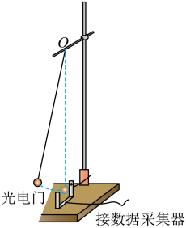

用单摆测量重力加速度
单摆 · 周期法

图 9-1：单摆测 g 装置（摆球最低点处光电门 + 数据采集器）
实验原理
核心原理：单摆做简谐运动，周期 T = 2π√(L/g)，故测出摆长 L 与周期 T 即可求 g = 4π²L/T²。
摆长测量：摆长是悬点到球心的距离：L = 摆线长 l + 小球半径 d/2（用刻度尺量 l，游标卡尺量球直径 d）。
周期测量：为减小误差，测 n 次全振动的时间 t，T = t/n；计时从摆球通过平衡位置（最低点）开始，此时速度最大、误差最小。
光电门法（图 9-1）：摆球每次经过最低点挡住光电门，相邻两次挡光间隔 = 半个周期 T/2；记录 n 个挡光间隔求 T 更精确。
误差分析：g ∝ L、g ∝ 1/T²。
· L 偏小（把摆线长当摆长）→ g 偏小；L 偏大 → g 偏大。
· 漏记全振动次数（n 偏小）→ T 偏大 → g 偏小；多记 → g 偏大。
· 圆锥摆（摆球画圆）→ T 偏小 → g 偏大；摆角过大 → T 偏大 → g 偏小。
· 图像法：作 T²–L 图像为过原点直线，斜率 k = 4π²/g → g = 4π²/k，可减小偶然误差。
摆长测量：摆长是悬点到球心的距离：L = 摆线长 l + 小球半径 d/2（用刻度尺量 l，游标卡尺量球直径 d）。
周期测量：为减小误差，测 n 次全振动的时间 t，T = t/n；计时从摆球通过平衡位置（最低点）开始，此时速度最大、误差最小。
光电门法（图 9-1）：摆球每次经过最低点挡住光电门，相邻两次挡光间隔 = 半个周期 T/2；记录 n 个挡光间隔求 T 更精确。
误差分析：g ∝ L、g ∝ 1/T²。
· L 偏小（把摆线长当摆长）→ g 偏小；L 偏大 → g 偏大。
· 漏记全振动次数（n 偏小）→ T 偏大 → g 偏小；多记 → g 偏大。
· 圆锥摆（摆球画圆）→ T 偏小 → g 偏大；摆角过大 → T 偏大 → g 偏小。
· 图像法：作 T²–L 图像为过原点直线，斜率 k = 4π²/g → g = 4π²/k，可减小偶然误差。
闯关练习
高考真题
（真题改编）某同学用单摆测量当地重力加速度：摆线长 l = 98.00 cm，游标卡尺测得摆球直径 d = 2.00 cm；将摆球拉起小角度（摆角 < 5°）后释放，用秒表从摆球通过最低点开始计时，测得 50 次全振动用时 t = 100.0 s。
（1）求摆长 L 与周期 T；（2）求当地 g 值；（3）若该同学误将摆线长 l 当作摆长代入公式，测得的 g 偏大还是偏小？
答案：(1) L = l + d/2 = 98.00 + 1.00 = 99.00 cm = 0.9900 m；T = t/50 = 100.0/50 = 2.00 s。
(2) g = 4π²L/T² = 4×3.14²×0.99/2.00² ≈ 9.77 m/s²。
(3) L 偏小（少了半径 d/2）→ g = 4π²L/T² 偏小。
（真题改编·光电门）同装置中改用光电门测周期：数据采集器记录到相邻两次挡光时间间隔 Δt = 1.00 s，摆长 L = 0.9900 m，求 g。
答案：相邻两次挡光为半个周期 → T = 2Δt = 2.00 s；g = 4π²L/T² ≈ 9.77 m/s²。注意：Δt 是半周期而非整周期。